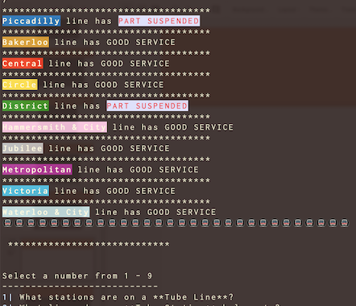
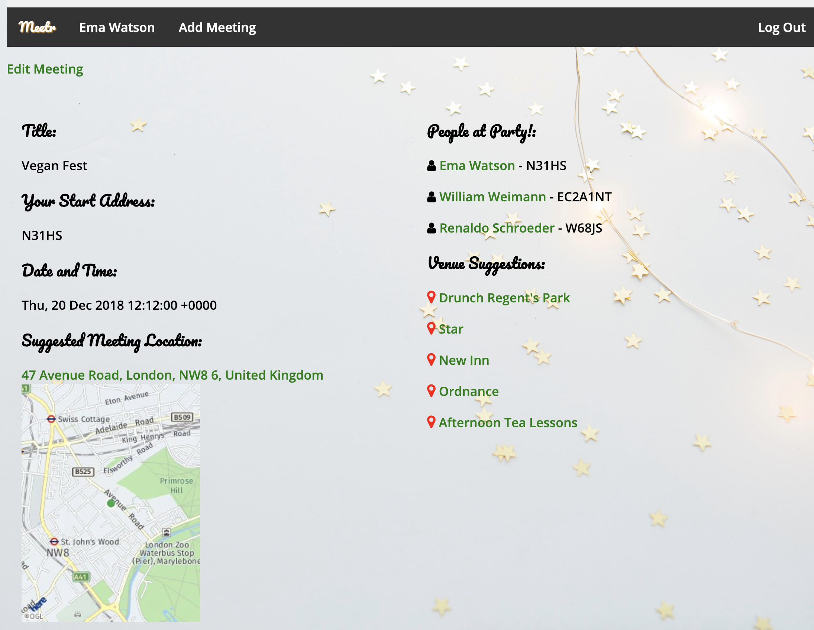
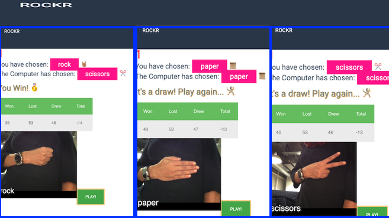
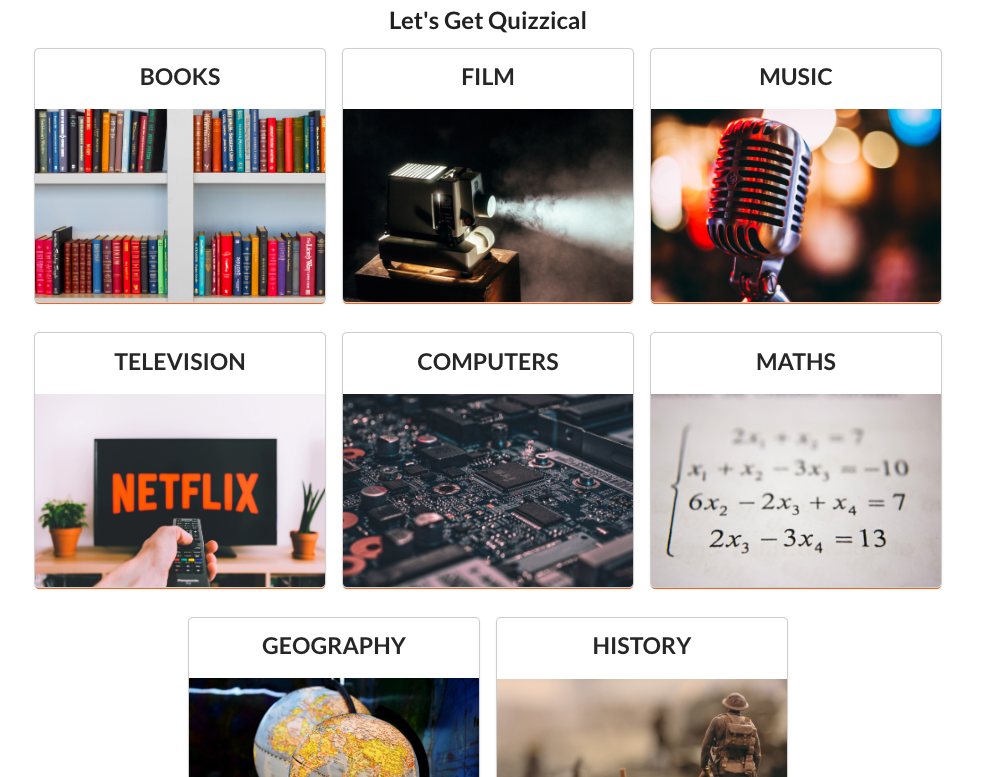
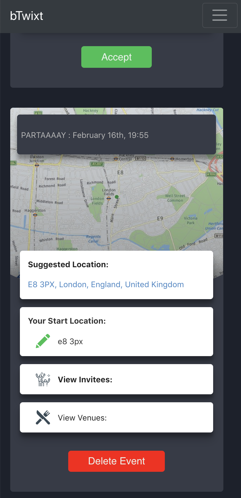

Software Engineer with extensive Agile Product Management
experience.
Jill of all trades. Mistress of some.
I have a Masters Degree in Computing. I've been part of the tech
industry for over a decade and have donned various hats - QA, PM,
Agile Coach, Product Lead. I have lived and worked in over 8 cities,
5 countries and 3 continents. This gives me a unique perspective on
understanding and adapting to various work cultures.
I believe that a successful team is one with a culture of empathy,
continuous improvement and collaboration.
A Ruby app that runs in the command line and uses the TFL API to query info on lines and stations - including live disruptions.
A Ruby on Rails app that calculates a central location to meet at when getting together with friends travelling from different start locations. The logic for calculating the centre point after taking into account all the start locations is done in the app & a 3rd party API is used to return venues at the suggested location.
A JavaScript game that uses ml5.js to train the computer to recognise the 3 gestures (Rock, Paper, Scissors) and play the game using the webcam. The backend is a Rails API that keeps track of player scores and is used to generate a leaderboard.
A responsive ReactJS app that uses a 3rd party API to generate a quiz based on a player's chosen category.
Find a central location to meet friends when starting off from different locations. View suggested venues. This responsive app uses Rails in the backend, React in the front end & also relies on a location/mapping API. Authentication uses JWT tokens. Styling is reliant on mostly custom CSS and also some Semantic UI.
ReactJS, React Native
ReactJS, CSS
Engineer in a cross-functional team working primarily with React and some Rails.
Full time student, learning to build apps using a variety of technologies, including, Ruby, Rails, JS, React, HTML, CSS, SQL.
Lead a team of developers, designers and data scientists to deliver an app across Android and iOS platforms targeted at Ride Share Drivers.
Hired by McKinsey Digital team to lead Product Management at a digital incubator for one of Germany's largest insurance companies. I lead a team of developers, UX designers and data analysts to deliver solutions for B2B customers.
Worked on a large UK Government digital transformation project for the DVSA (using GDS principles) to improve the way garages perform MOT tests for vehicles.
Core member of Tech Leadership team that enabled successful transformation from Waterfall to Agile to Lean/Kanban and fostered a startup culture.
Lead a team of developers, designers and data scientists to deliver an app across Android and iOS platforms targeted at Ride Share Drivers.
Managed migration of legacy dating site with over 4 million users to new platform.
Collaborated with stakeholders, developers & QA to plan sprints, write stories, acceptance criteria and track tasks. Worked with clients to improve & implement Agile processes.
Creation and execution of Manual and Automated test scripts for various large e-commerce retailers.
Lead a team of internationally located testers and set up QA processes in a startup environment with no previous QA.
Lead teams of testers distributed across the UK and in China.
Time To React - March 2020, London UK: React Hooks - How to write your own!
CukeUp 2016, London UK: Think Small - A talk on story size and team size
CukeUp 2014, London UK: Build the Right Stuff - Workshop on Hypotheses Driven Development
CukeUp 2011, London UK: BDD - How to scale up with Cucumber
coding === joy